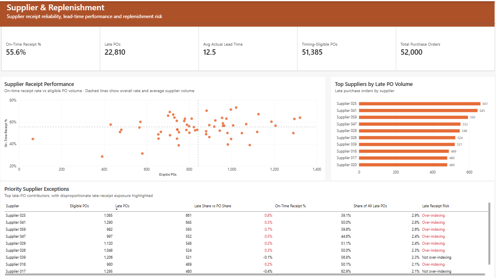
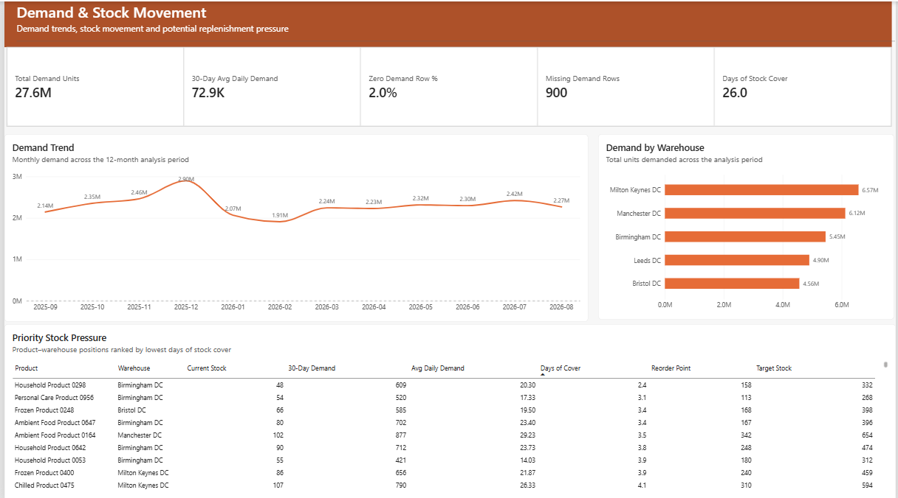
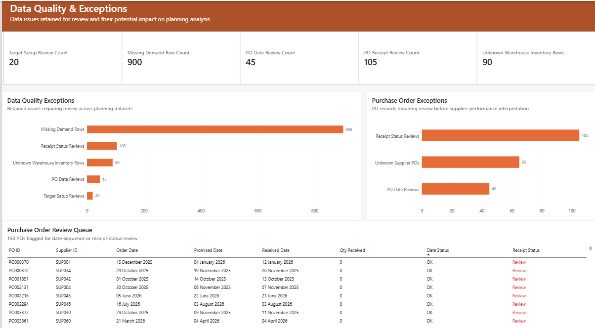

Featured project / Inventory & replenishment
Inventory & Stock PlanningTurning stock and supplier exceptions into replenishment priorities.
I built a four-page Power BI report to help planners identify stock shortages, review supplier reliability and understand demand pressure across warehouses. Data-quality exceptions remain visible so users can distinguish operational risk from records that need investigation.
Independent portfolio project · Inventory and supply-chain analysis
Explore the repository ↗The business question
Where should planners act first?
Inventory planners need to maintain availability without carrying unnecessary stock. Total inventory alone cannot show whether the right products are available in the right warehouses, or whether supplier delays threaten replenishment.
I organised the report around three decisions: which stock positions need attention, which suppliers require review, and which data issues must be resolved before a planning decision can be trusted.

Key findings
Stock volume hides local pressure.
Inventory is unevenly positioned
54.7% of product-warehouse positions were below target stock. The exception view highlights stock shortfalls so planners can investigate where inventory is most needed.
Supplier reliability needs attention
22,810 purchase orders were late. Supplier-level comparisons show who contributes most to late receipts and how actual lead times vary, supporting targeted performance reviews.
Demand creates local risk
Total demand was 27.6M units, with a latest 30-day average of 72.9K units per day. Some product-warehouse combinations had materially less cover than the overall 26.0-day position.
What to do next
Connect each exception to an action.
Prioritise replenishment
Inventory Planning should review positions below reorder point and with the lowest stock cover first, then investigate persistent target-stock gaps.
Track the percentage below reorder point, days of cover and stock gaps to target.
Review late suppliers
Procurement should review suppliers contributing disproportionately to late receipts and agree corrective actions where performance remains weak.
Track on-time receipt percentage and late purchase-order counts.
Resolve planning-data issues
Procurement Operations and data owners should review purchase-order dates and receipt statuses, then correct missing demand, unknown warehouses and stock-target setup issues at source.
Track the remaining exceptions in each review queue.
These are proposed actions supported by the analysis. Their effect on availability, supplier performance and inventory levels has not been measured.
My approach
Prepare the data. Model the operation. Make exceptions visible.
Power Query preparation
I profiled and standardised source data, reviewed missing and duplicate identifiers, and flagged invalid inventory values, purchase-order date sequences and inconsistent stock targets. Questionable records remain visible for review.
A shared reporting model
I connected sales demand, inventory snapshots, purchase orders and stock targets to product, supplier, warehouse and date dimensions. Single-direction relationships keep filtering predictable across the report.
DAX and validation
I built measures for stock thresholds, supplier timing, recent demand, stock cover and exceptions. Validation included KPI reconciliation, filter and navigation checks, tooltip review and manual checks of exception counts.
Explore the model and quality controls
The date dimension actively filters demand dates, inventory snapshot dates and purchase-order dates. Inactive relationships retain promised and received dates for alternative date analysis.
The final review queues contain 900 missing demand rows, 105 purchase-order receipt-status reviews, 45 purchase-order date reviews, 90 inventory rows linked to unknown warehouses and 20 stock-target setup reviews. These are separate checks, not a combined count of unique rejected records.
Supplier timing measures use timing-eligible purchase orders. Retaining and flagging exceptions helps readers understand which records can support each decision.
Dashboard views
Follow the risk from stock to its context.



Project outcome
A clear route from issue to investigation.
The four report pages connect inventory position, supplier delivery, demand and data quality in one decision-support tool. Users can identify an exception, explore its context, prioritise an action and assign an owner.
This project developed my skills in Power Query preparation, multi-fact modelling, DAX and business-focused reporting. It reinforced the importance of showing data limitations alongside operational findings.
Limitations & evidence
Use stock cover with context.
Stock cover uses recent demand and is not a formal forecast. Reorder and target-stock thresholds are supplied planning inputs; the report does not optimise them or automatically calculate order quantities.
No cost, margin, service-level or holding-cost data was available. Supplier results also depend on recorded dates and receipt statuses, so unresolved exceptions need consideration before decisions are made.
The figures and methods on this page are documented in the project README. Source CSVs, dashboard screenshots and the Power BI report file are available in the repository.